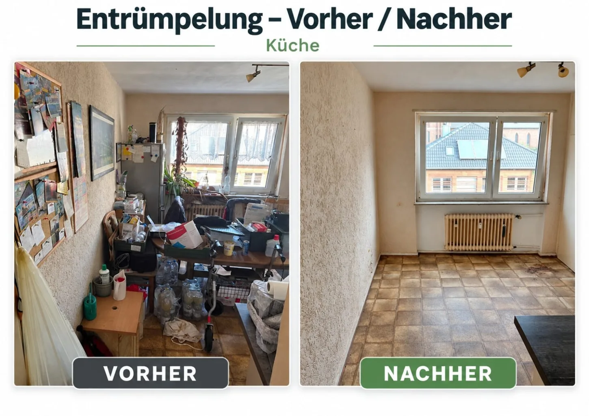
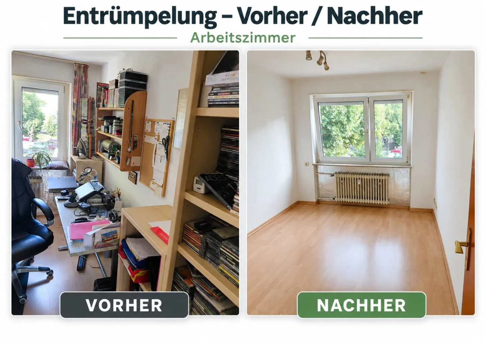
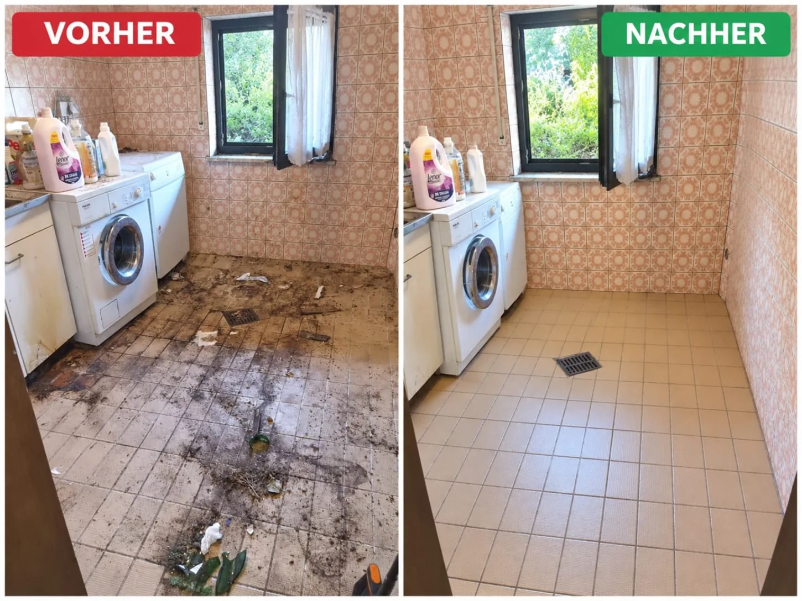
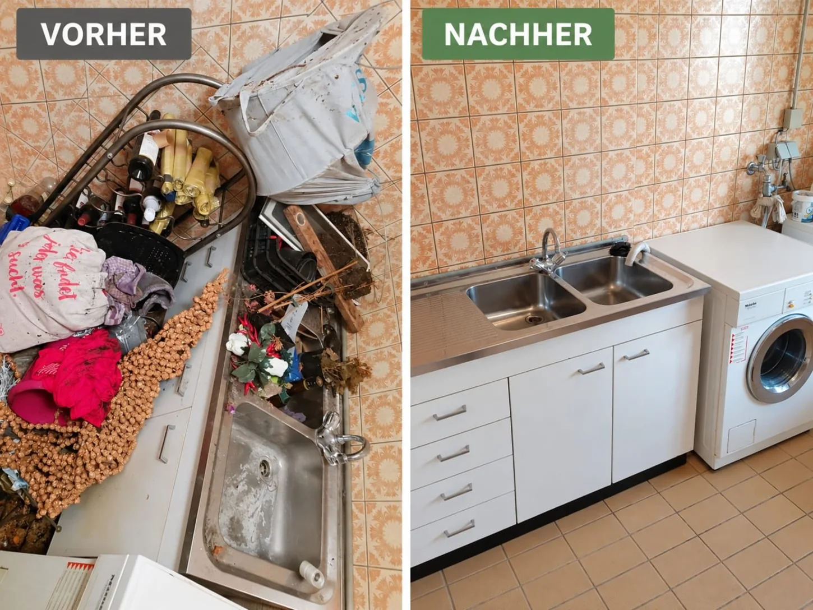
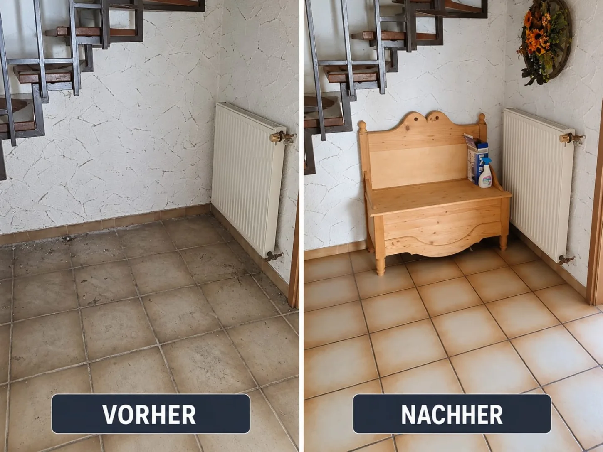
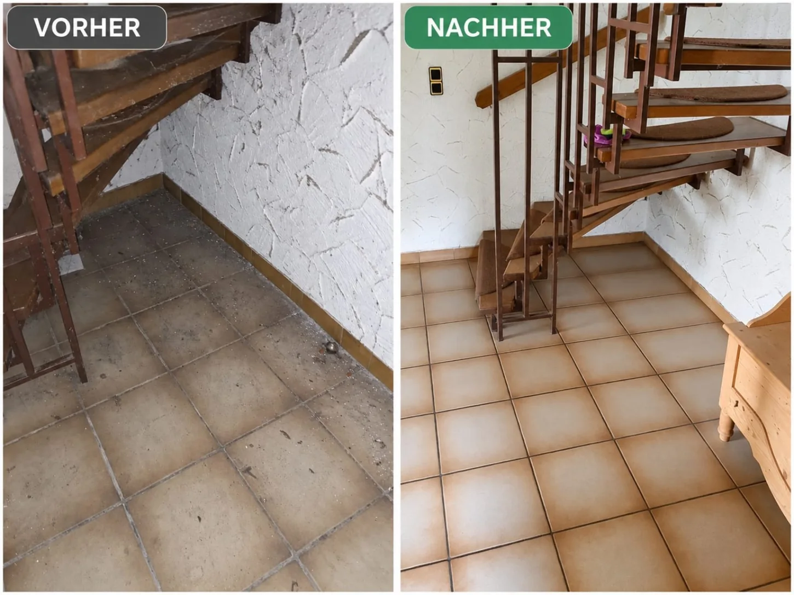
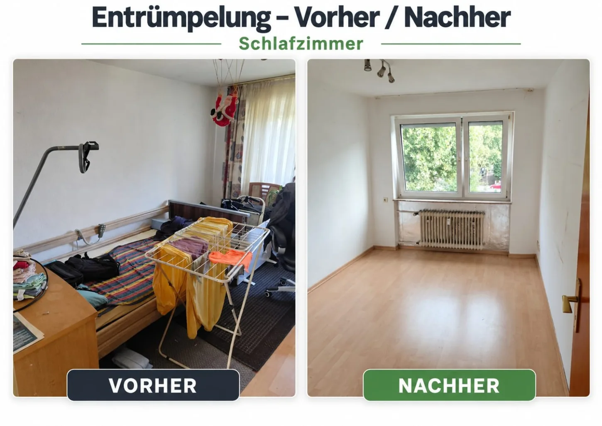

01 · Platz schaffen
Entrümpelung
Wohnungsauflösungen, Haushaltsauflösungen, Keller, Dachboden und einzelne Räume – inklusive besprochener Entsorgung.
Mehr zur Entrümpelung →Ihr regionaler Ansprechpartner für Entkernung, Entrümpelung und Reinigung in Rodalben, Pirmasens, Kaiserslautern und Umgebung. Persönlich, zuverlässig und mit klarem Blick fürs Ergebnis.

Vom Freiräumen über vorbereitende Rückbauarbeiten bis zur gründlichen Reinigung – auf Wunsch aus einer Hand.

Wohnungsauflösungen, Haushaltsauflösungen, Keller, Dachboden und einzelne Räume – inklusive besprochener Entsorgung.
Mehr zur Entrümpelung →
Kleinere Rückbauarbeiten, Bad entkernen sowie Bodenbeläge und Tapeten entfernen – nach Besichtigung und Vereinbarung.
Mehr zur Entkernung →
Grund-, Intensiv-, Büro-, Praxis-, Treppenhaus- und regelmäßige Unterhaltsreinigung für Privat- und Gewerbekunden.
Mehr zur Reinigung →Einblick in ausgewählte Projekte. Die Bilder zeigen reale Vorher-Nachher-Situationen aus unseren Einsätzen.




Rufen Sie uns an oder schreiben Sie uns per WhatsApp oder E-Mail. Beschreiben Sie kurz Ihr Vorhaben.
Wir klären die Details und vereinbaren, falls nötig, eine Besichtigung vor Ort.
Sie erhalten ein individuell abgestimmtes Angebot. Danach planen wir den Einsatz gemeinsam.
Ob einzelne Räume oder ein größeres Vorhaben: Schildern Sie uns kurz, was erledigt werden soll. Wir besprechen die nächsten Schritte persönlich.
Auch telefonisch erreichbar:
0157 81282383 · 0176 41165808
Schreiben Sie uns direkt per WhatsApp, E-Mail oder Telefon.
✉ E-Mail sendeninfo.schmidt-entkernung@web.de